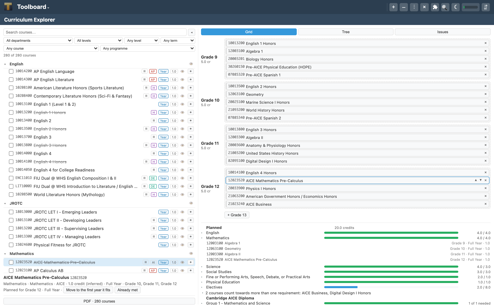

Plan four years of classes in about fifteen minutes.
A course catalog is a list. A schedule is a plan. Turning one into the other means
holding prerequisite chains, credit minimums and which year each course is open to
all in your head at once — which is why it usually takes an afternoon and a legal pad.
Drag courses onto a grid instead, and let the tool do the checking.
That link opens Toolboard, installs the School Tools plugin, adds a Curriculum Explorer
and loads the catalog into it. Everything stays in your browser — no account, no upload,
nothing sent anywhere.

A finished four-year plan. Catalog on the left, the plan on the right, and every
graduation requirement counted underneath — here, twenty credits with no open issues.
What it checks for you
Prerequisites
Every course you place is checked against what has to come first — and whether that
course finishes early enough. A prerequisite tree shows the whole chain behind any
course, so you can see how deep it goes before you commit to it.
Requirements
Credits are counted against each requirement in your catalog as you plan, including
courses that satisfy two at once. Open any requirement to see exactly which courses
are making up the number.
When it is offered
Some courses run one semester only, some only in summer, some only for juniors and
seniors. Put one where it cannot go and the tool says so, rather than letting you
find out at registration.
How to build a plan in fifteen minutes
The order matters more than the speed. Working outwards from the courses with the least
freedom leaves the easy choices for last, when the shape of the plan is already settled.
Tick off what is already done
Anything taken before the plan starts counts towards graduation without taking a seat in
it. Select a course and press Already met.
Students often arrive with high school credit earned in middle school —
Algebra 1 and a world language are the usual ones.
Decide the yearly course load
Six or seven credits a year, whatever your school runs. Each year in the grid shows its
own credit total, so you will see immediately when one is overloaded.
Place the courses that have no alternative
The required sequences, one per year, straight down the grid. This is most of the plan
and it takes about a minute.
English 1, 2, 3, 4 in grades 9 through 12.
Work the longest chain backwards
Find the course you most want to reach, put it in the final year, then place each of its
prerequisites in the year before. The Tree tab shows the chain if you are not sure how
deep it runs.
Calculus in grade 12 means Pre-Calculus in 11, Algebra II in 10 and
Geometry in 9 — so Algebra 1 has to have been taken already.
Balance the years
Drag courses between years until the credit totals even out. Anything that lands where it
cannot go says so as you drop it.
Fill the gaps with electives
Filter the catalog by department or requirement to find courses that count for something
you are still short on, rather than picking blind.
Clear the Issues tab
Every prerequisite conflict, ordering problem and unmet requirement is listed in one
place. Click one to jump to the course it concerns. When the tab is empty, the plan holds
together.
Take it to your counselor
Save the plan as a PNG, or print the catalog as a PDF, and go through it with someone who
knows this year's master schedule. A plan that validates is still a plan — the school
decides what actually runs.
Example catalogs
Two complete catalogs to try the tool on. Both describe fictitious schools:
the course data is real in shape and structure, but the schools, their staff and their
documents are invented, and neither one is anyone's official curriculum.
Westhaven High School
2026–2027 · 280 courses
A large public high school with a Cambridge AICE diploma pathway, dual enrolment,
AP and honors tracks, and a full set of graduation requirements to plan against.
Ashford Meridian High School
2025–2026 · 129 courses
A smaller independent college-preparatory school. Fewer courses, longer prerequisite
chains, and a required subject that most public schools do not have.
Add the School Tools plugin from the plugin menu in the header
Add a Curriculum Explorer to a board
Load a catalog
Press JSON, then File to pick one from your computer, or paste it in and
press Load. Sample fills the tool with a small invented catalog if you
just want to look around.
Building a catalog for your own school
The tool reads one JSON file. There is no library of schools behind it — you make the file
once, and it is yours.
Gather the source documents
Your school's course catalog or selection card, as a PDF if you can get one. You will
usually need more than that: the district's graduation requirements, and the rules for
any special programme — AICE, AP Capstone, IB, a career academy.
Get the schema
In the tool, press JSON, switch to Schema, and press
Show the JSON. That is the full description of what the tool reads, and it is
the version that matches the tool you are running.
Hand both to an AI assistant
The documents and the schema, and ask for a catalog file. Expect to go a few rounds:
course numbers get transposed, prerequisites get flattened, credit values get guessed at.
Load it and read the Issues tab
This is the fastest way to find what the conversion got wrong. A prerequisite naming a
course that is not in the catalog, or a course open to no year at all, shows up
immediately — fix the file and load it again.
A catalog is a description, not an authority. Every file — the examples here
included — is somebody's reading of a school document, and readings contain mistakes. Treat a
finished plan as a well-checked draft to take to your counselor, never as a registration.